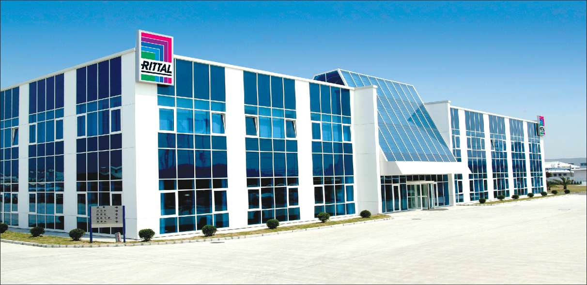
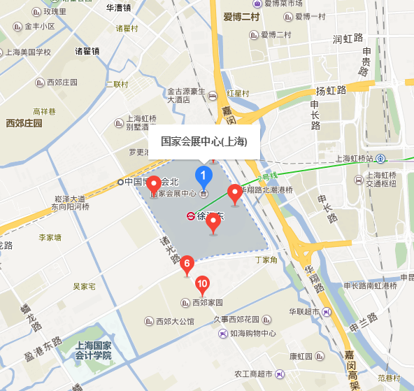

中国国际工业博览会
作为以工业为主题的专业展会，IAS经过十多年的发展已经在规模及影响力上成为亚洲第一的工业盛会。IAS始终关注工业自动化全面解决方案、生产及过程自动化、电气系统、机器人技术、工业IT与制造业信息化、微系统技术，成功奠定了其作为中国乃至亚洲自动化领域最具魅力的专业展会地位，成为中国工业自动化企业参与的首选及行业风向标。2017年IAS将深入探讨”创新，智能，绿色”,为展商及专业观众的技术交流及商务洽谈提供理想的平台。

威图中国

威图力量--力量和远见!
作为以工业为主题的专业展会，IAS经过十多年的发展已经在规模及影响力上成为亚洲第一的工业盛会。IAS始终关注工业自动化全面解决方案、生产及过程自动化、电气系统、机器人技术、工业IT与制造业信息化、微系统技术，成功奠定了其作为中国乃至亚洲自动化领域最具魅力的专业展会地位，成为中国工业自动化企业参与的首选及行业风向标。2017年IAS将深入探讨”创新，智能，绿色”,为展商及专业观众的技术交流及商务洽谈提供理想的平台。
威图系统概论
交通信息索引
 点击地图获取导航位置
- 展馆时间：第19届中国国际工业博览会
- 展馆地点：上海虹桥-国家会展中心
- 展会官网：http://ias.ciif-expo.com/
- 虹桥火车站、机场至展馆：
乘坐地铁2号线,经过1站, 到达徐泾东站,步行约170米,到达国家会展中心